Unidad 3:#
Funciones polinómicas
Problema 16. [Explorar applet polinómicas]()#
Lean el siguiente recuadro:
En estas últimas dos unidades hemos estudiado en detalle las funciones lineales, que responden a fórmulas del tipo:
| $ f(x) = mx + b $ |
y las funciones cuadráticas, que responden a fórmulas del tipo:
| $ f(x) = ax^2 + bx + c $ |
Debido al valor del máximo exponente que aparece en las variables en cada una de estas funciones, se dice que las lineas son de grado 1 y las cuadráticas son de grado 2. Siguiendo de la misma manera, se puede pensar en una familia más general de funciones, donde los grados son más altos. Como irán apareciendo más términos y sería incómodo ir eligiendo distintas letras para nombrar a cada coeficiente, comenzaremos a nombrarlos de otra manera: $ a_0 $ será el término independiente, $ a_1 $ el coeficiente lineal (la pendiente $ m $ de la recta), $ a_2 $ el coeficiente cuadrático y así sucesivamente. Con esta escritura las fórmulas quedarían así
- Una función de grado 1 tendría la forma $ f(x) = a_{1}x + a_{0} $ (con $ a_1 \neq 0 $).
- Una función de grado 2: $ f(x)= a_{2}x^{2} + a_{1}x + a_{0} $ (con $ a_{2} \neq 0 $).
- Una función de grado 3: $ f(x) = a_{3}x^{3} + a_{2}x^{2} + a_{1}x + a_{0} $ (con $ a_3 \neq 0 $).
- Una función de grado 4: $ f(x) = a_{4}x^{4} + a_{3}x^{3} + a_{2}x^{2} + a_{1}x + a_{0} $ (con $ a_{4} \neq 0 $).
- Y así sucesivamente.
En la otra dirección, una función constante $ f(x)= a_{0} $ (con $ a_{0} \neq 0 $) tiene grado 0.
La función constante, pero nula, cuta fórmula es $ f(x) = 0 $, es también polinómica, pero no tiene grado.
Todas estas fuciones se llaman funciones polinómicas.
Este problema nos servirá para investigar propiedades de los gráficos de distintas funciones polinómicas, en relación a sus fórmulas y también distintas formas equivalentes de escribir sus fórmulas.
Abran el archivo FuncionesPolinómicas.ggb. La idea es expllorarlo y construir entre todos observaciones y afirmaciones que podamos comprobar o descartar para ir conociendo a estas funciones.
Problema 17. [Gráficos y fórmulas]( )#
)#
Utilicen las conclusiones del Problema 16 para decidir cuál de los gráficos corresponde a cada una de las funciones polinómicas de grado 2 dadas:
\( f(x) = (x + 2)(x - 1) \) |
\( g(x) = -(x + 2)(x - 1) \) |
|---|---|
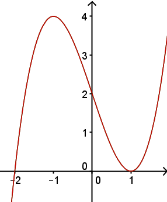 |
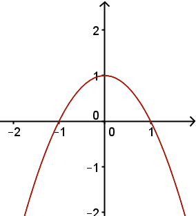 |
a) |
b) |
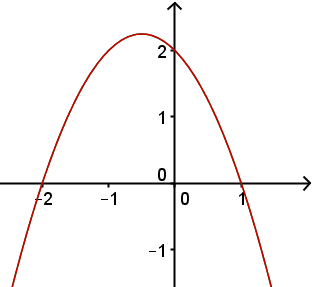 |
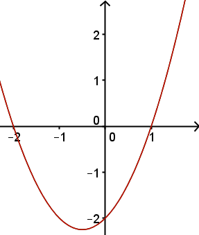 |
c) |
d) |
Problema 18. [Más gráficos y fórmulas]()#
Utilicen las conclusiones del Problema 16 para decidir cuál de los gráficos corresponde a cada una de las funciones polinómicas dadas:
\( f(x) = x^3 -x \) |
\( g(x) = x^5 + x^4 - x^3 - x^2 \) |
|---|---|
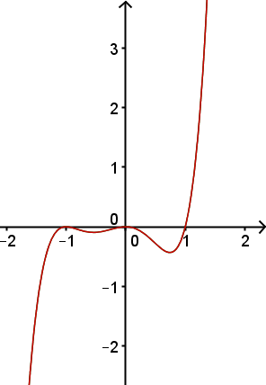 |
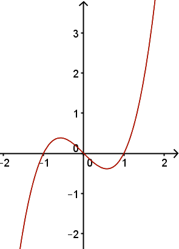 |
a) |
b) |
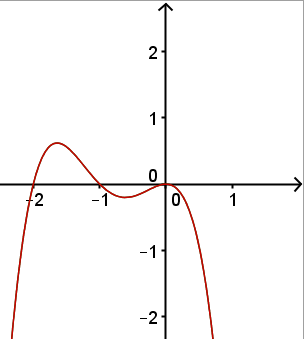 |
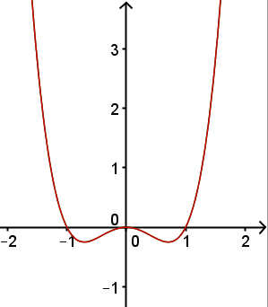 |
c) |
d) |
Problema 19. [Todavía más gráficos y fórmulas]()#
La mismaconsigna que en los problemas anteriores, para las siguientes funciones y gráficos.
\( f(x) = -(x + 1)^3(x - 1) \) |
\( g(x) = 2x^2(x + 1)(x - 1)^2 \) |
|---|---|
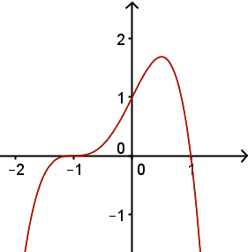 |
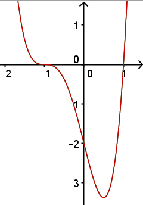 |
a) |
b) |
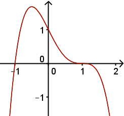 |
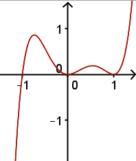 |
c) |
d) |
Problema 20. [Comando Desarrolla]()#
a) Verifiquen sus respuestas del Problema 19 ingresando en la Barra de Entrada de GeoGebra las funciones \( f(x) = -(x + 1)^3(x - 1) \) y \( g(x) = 2x^2(x + 1)(x - 1)^2 \).
b) Investiguen el comando Desarrolla[ <Función> ] para las funciones del ítem anterior. ¿Cómo funciona ese comando?¿Cómo harían calculando con lápiz y papel lo que hace el comando?.
Problema 21. [Manejo algebraico: distributiva]()#
a) Desarrollen calculando con lápiz y papel las siguientes funciones pollinómicas:
- $ f_1(x) = (x - 5)(x - 2)(x + 1) $
- $ f_2(x) = x(x + 2)(x - 1) $
- $ f_3(x) = (x -3)(x + 3)(x + 1)^2 $
- $ f_4(x) = (x - 5)^2(x - 2) $
b) Observen las fórmulas de \( f_1, f_2, f_3 \) y \( f_4 \) dadas en el ítem anterior y las versiones desarrolladas obtenidas.¿A partir de cuál de esas versiones les resullltaría más fácil dibujar un gráfico aproximado de las funciones?.
Problema 22. [Derivar funciones polinómicas I]()#
Lean el siguiente recuadro:
En la Unidad anterior conocimos el concepto de derivada y aprendimos a derivar funciones lineales y cuadráticas. Recordemos:
| La derivada de una función en un punto es la pendiente de la recta tangente al gráfico de la función en ese punto. |
La derivada de una función constante es 0, porque su gráfico es una recta horizontal y la recta tangente a esa recta en todo punto es la recta misma, que tiene pendiente $0$.
La derivada de una función lineal (polinómica de grado 1) $ f(x) = mx + b $ es la pendiente de su recta tangente. Pero en todo punto la recta tangente es la misma $ f(x) = mx + b $, cuya pendiente es $ m $. Por lo tanto, la derivada de $ f(x) = mx + b $ es $ f'(x) = m $.
En particular, si $ f(x) = x $ entonces es $ f'(x) = 1 $.
Vamos a mostrar que con esto nos alcanza para conocer las derivadas de otras funciones polinómicas como $ f(x) = x^2, f(x) = x^3, f(x) = x^4 $, etc.
Lo único que necesitamos conocer es cómo se deriva el producto de dos funciones. Y para eso necesitamos tener presente la definición de derivada con la que trabajamos en los **Problemas 8 y 9** de la Unidad anterior:
| \[f'(x) = \lim_{h \to 0} \frac{f(x+h) - f(x)}{h} \] |
No importa que en este curso no hagamos un estudio sistemático y detallado del concepto de límite. Para entender esta definición hay que comprender que $ h \to 0 $ significa que $ h $ se va acercando a $ 0 $ y uno observa qué sucede con el cociente. Podemos tener una idea poniendo valores de $ h $ pequeños, como por ejemplo $ h = 0.00001 $. pero siempre debe ser $ h \neq 0 $ porque no se puede dividir por $0$. En el cociente de la definición de derivada el numerador y el denominador se acercan a $0$ a la vez, pero de manera que el cociente termina acercándose a un número, que es, en cada punto $x$, el valor de la pendiente de la recta tangente al gráfico de la función $f$ en el punto $ \left(x,f(x)\right) $.
Supongamos ahora que queremos conocer la derivada de $ f(x) \cdot g(x) $. Para eso estudiamos el límite:
| \[[f(x)g(x)]´ = \lim_{h \to 0} \frac{f(x + h)g(x + h) - f(x)g(x)}{h} \] |
Sumamos y restamos una misma cantidad, solo para escribir la expresión de manera distinta, pero equivalente $ ^a $.
| \[[f(x)g(x)]´ = \lim_{h \to 0} \frac{f(x + h)g(x + h) \textcolor{red}{-g(x + h)f(x) + g(x + h)f(x)} - f(x)g(x)}{h} \] |
| \[ = \lim_{h \to 0} \frac{ ( f(x + h) - f(x) )g(x + h) + (g(x + h) - g(x) )f(x) }{h} \] |
| \[ = \lim_{h \to 0} \frac{f(x + h) - f(x)}{h}g(x + h) + \lim_{h \to 0} \frac{(g(x + h) - g(x)}{h}f(x) \] |
| \[ = f´(x)g(x) + f(x)g´(x) \] |
Lo que se ha demostrado es la manera de derivar un producto de dos funciones:
\[ [f(x)g(x)]´ = f´(x)g(x) + f(x)g´(x) \] |
(3.8) |
$\quad ^a$ Es un procedimiento común en matemática (y también en otras disciplinas): cambiar la manera de expresar algo para que se entienda un aspecto que con la expresión anterior no se entendía o no se alcanzaba a ver.
a) Consideren que \( f(x) = x^2 \) es equivalente a \( f(x) = x \cdot x \) y utiicen la derivada del producto para deducir la derivada de \( f(x) = x^2 \) (que ya conocen).
b) Consideren que \( f(x) = x^3 \) es equivalente a \( f(x) = x^2 \cdot x \) y utilicen la derivada del producto para deducir la derivada de \( f(x) = x^3 \).
c) Consideren que \( f(x) = x^4 \) es equivalente a \( f(x) = x^3 \cdot x \) y utilicen la derivada del producto para deducir la derivada de \( f(x) = x^4 \).
d) Si no se aburrieron y todavía lo necesitan, consideren que \( f(x) = x^5 \) es equivalente a \( f(x)= x^4 \cdot x \) y utilicen la derivada del producto para deducir la derivada de \( f(x) = x^5 \).
e) Continúen en esta línea hasta que sean capaces de decir cuál es la derivada de \( f(x) = x^n \), para cualquier entero positivo \( n \).
Problema 23. [Raíces de funciones polinómicas]()#
|
Consideren la función $ f(x) = x^3 + x^2 + x - 1 $, cuyo gráfico está a la derecha. Recordemos que un número $ x_0 $ es raíz de $ f $ si $ f(x_0) = 0 $. Por lo tanto, se ve en el gráfico que $ f $ tiene una raíz entre $0$ y $1$.
|

|
Problema 24. [Raíces de funciones polinómicas II]()#
a) Observen la animación que se muestra en esta applet(clic acá). Traten de explicar en palabras qué es llo que va sucediendo, a partir de una lista que lo cuente paso a paso.
b) Consideren que la función es \( f(x) = x^3 + x^2 + x - 1 \), como en el problema anterior y úsenla como ejemplo para realizar este procedimiento. Nota: la comprensión de cuál es el objetivo de lo que están observando es parte necesaria de la motivación que puedan encontrar para llevar adelante esta tarea.,
c) ¿Pueden pensar alguna manera de sistematizar este procedimiento con el recurso de una computadora?.
Problema 25. [Caja de volumen máximo]#
Cortando cuadrados iguales de las esquinas de una plancha de artón de $ 50\ cm \times 30\ cm $, el cartón puede plegarse para formar una caja.
|
¿Cuál debe ser la medida del lado del cuadradito cortado para que el volumen de la caja que se arme sea lo mayo posible? |

|
Problema 26. [Definición de extremos]#
Lean el siguiente recuadro:
EL problema anterior es un ejempo muy concreto de una variedad de problemas para los que la modelización mediante funciones y los recursos del cálculo resultan herramientas extraordinarias. Se trata de los problemas de optimización. Permanentemente se presentan en las aplicaciones económicas, físicas e ingenieriles situaciones en las que se requiere identificar las mejores condiciones mediante un modelo: dónde es menor la temperatura, bajo qué condiciones un costo que hay que afrontar es lo menor posible, qué camino ess máas rápido, etc. Eso nos lleva a caracterizar y deffinir los valores extremos de una función, en su dominio.
Observen el gráfico de la función $ f $:

La función está definida en el intervalo cerrado $ [a, b] $. En dicho intervalo alcanza distintos tipos de extremos. Alcanza un máximo local de valor $ f(x_0) $ en el punto $ x_0 $. Es apenas local, porque es el máximo valor que toma $ f $ en los alrededores del punto $ x_0 $, aunque luego sea superado por otros valores que toma $ f $, por ejemplo cerca del punto $ b $. En cambio $ f $ alcanza un máximo absoluto de valor $ f(b) $ en el punto $ b $. Es absoluto porque no hay en todo el dominio de $ f $ otro punto en el qie $ f $ valga más de lo que vale en $ b $.
Por otra parte, $ f $ alcanza un mínimo local de valor $ f(a) $ en el punto $ a $, que es apenas local, porque es el mínimo valor que toma $ f $ en los alrededores del punto $ a $ (observen que esos alrededores existen solo a la derecha de $ a $, por ser $a$ un punto frontera del dominio de $f$), aunque existan otros puntos en los que $f$ vale menos que lo que vale en $a$, por ejemplo cerca del punto $ x_1 $. Precisamente en el punto $x_1$ la función $f$ alcanza un mínimo absoluto, porque no hay ningún punto en $ [a, b] $ en el que $f$ valga menos que lo que vale en $ x_1 $.
El gráfico de $f$ tiene también destacados dos segmentos horizontales en los puntos del intervalo abierto $ (a, b) $ en los que $f$ alcanza extremos. Esos segmentos muestran que la recta taangente en dichos puntos es horizontal, lo que en términos de la derivada, significa qu e $f´$ se anula (vale 0) en dichos puntos. Formalmente, esto se conoce como el teorema de Fermat (Pierre de Fermat, fránces (1601-1665)): Sea $f$ una función derivable en el intervalo abierto $ (a, b) $. Si $f$ alcanza un máximo o un mínimo en el punto $ x_0 \in (a, b) $ entonces $ f´(x) = 0 $.
Esta anulación de la derivada permite identificar los extremos (máximos o mínimos) locales de puntos del dominio que no son frontera del mismo, siempre que la derivada exista en esos puntos. Los puntos $ x_0 $ del dominio de $ f $ en los que la derivada de $ f $ se anula ($f´(x) = 0$) se denominan puntos críticos de $ f $.
Concretamente definimos:
- $ f : I \subset \mathbb{R} \rightarrow \mathbb{R} $ alcanza un máximmo local en $ x_0 \in I $ si existe algún intervalo abierto que contiene a $ x_0 $ tal que para cualquier punto $ x $ de dicho intervalo resulta $ f(x) \leq f(x_0) $.
- $ f : I \subset \mathbb{R} \rightarrow \mathbb{R} $ alcanza un mínimmo local en $ x_0 \in I $ si existe algún intervalo abierto que contiene a $ x_0 $ tal que para cualquier punto $ x $ de dicho intervalo resulta $ f(x) \geq f(x_0) $.
- $ f : I \subset \mathbb{R} \rightarrow \mathbb{R} $ alcanza un máximmo absoluto en $ x_0 \in I $ si para cualquier $ x $ de dicho intervalo resulta $ f(x) \leq f(x_0) $.
- $ f : I \subset \mathbb{R} \rightarrow \mathbb{R} $ alcanza un mínimmo absoluto en $ x_0 \in I $ si para cualquier $ x $ de dicho intervalo resulta $ f(x) \geq f(x_0) $.
Vuelvan al Problema 25 y observen el gráfico. Identifiquen analíticamente el máximo de la función y completen la resolución del problema.
Problema 27. [Practicar búsqueda de extremos I]#
Encuentren los extremos locales de cada una de las siguientes funciones. ¿Son máximos o mínimos locales?¿Cómo lo pueden decidir?
a) \( f(x) = \frac{1}{5}x^3 - \frac{1}{2}x^2 - x + 1 \)
b) \( f(x) = -\frac{1}{5}x^3 + \frac{1}{2}x^2 + x - 1 \)
c) \( f(x) = \frac{1}{3}x^3 + x \)
Problema 28. [Practicar búsqueda de extremos II]#
Buscar puntos críticos de las siguientes funciones demanda resolver ecuaciones polinómicas de grado mayor que 2. En el Problema 24 se estudió un recurso para hacerlo de forma aproximada. Utilicen ese recurso para buscar los extremos locales de cada función.
a) \( f(x) = \frac{1}{5}x^4 - \frac{1}{2}x^3 - x^2 + x + 1 \)
b) \( f(x) = -\frac{1}{5}x^4 + \frac{1}{2}x^3 + x^2 + x - 1 \)
c) \( f(x) = \frac{1}{3}x^4 + x^2 \)
Problema 29. [Extremos con animación]#
a) Accedan a este enlace y observen cómo varía el cuadrilatero verde cuando se mueve el deslizador \(n\).
(i) Calculen el área del cuadrilatero para un par de valores de \( n \) que elijan.
(ii) Determinen analíticamente para qué valor de \( n \) es mínima el área del polígono verde.
b) Lo mismo que en el ítem anterior, pero con la figura de este enlace.
Problema 30. [Construir applet para extremos]()#
Realicen en GeoGebra la siguiente construcción dinámica:
- La construcción debe moverse con un deslizador.
- Debe consistir en un rectángulo con una semicircunferencia sobre uno de sus lados, de manera que ese lado del rectángulo sea un diámetro de la circunferencia.
- Al mover el deslizador, el largo y el ancho del rectángulo deben variar, pero de tal manera que el perímetro total de la figura (formado por tres lados del rectángulo y por la semicircunferencia) mida siempre 8 unidades.
¿Para qué valor del deslizador el área de la figura resulta máxima?.
Probema 31. [Perímetro mínimo]#
De todos los rectángulos de área $ 100\ m^2 $ determinen, si es posible, el rectángulo que tenga menor perímetro.
Problema 32. [Caja sin tapa]#
Se desea fabricar una caja sin tapa, de base cuadrada$^2$. El material para fabricar las caras laterales cuesta $\$3 $ el $cm^2$ y el del fondo -que debe ser más rígido- cuesta $ \$4 $ el $ cm^2 $. ¿Cuáles son las dimensiones de la caja de volumen máximo que se puede construir con un presupuesto de $ \$48 $?.
Problema 33. [Triángulo de área mínima]#
Hallen una ecuación de la recta que pasa por el punto $(3, 5)$ y forma en el primer cuadrante un triángulo de área mínima.
Problema 34. [La pista de atletismo]#
Una pista de atletismo consta de una zona rectangular y un semicírculo en cada uno de sus extremos. Si el perímetro de la pista ha de ser $ 200\ metros $, calculen las dimensiones que hacen máxima el área de la zona rectangular. ¿Cuál es el área total de la pista?.
Problema 35. [Rectángulo en triángulo]#
Determinen las dimesiones del rectángulo de mayor área que puee inscribirse en un triángulo rectángulo cuyos catetos miden \(5\ cm\) y \(12\ cm\), si el rectángulo tiene un vértice en el ángulo recto del triángulo y otro vértice en la hipotenusa del triángulo.
Problema 36. [Rectángulo inscripto en parábola]#
Un rectángulo tiene un vértice en \((0, 0)\), un lado sobre el eje \(x\) y otro lado sobre el eje \(y\). El vértice opuesto a \((0, 0)\) está sobre la parábola de ecuación \( y = 2x^2 - 9x + 12 \) con \( 0 \leq x \leq 3 \) ¿Cuál es el área máxima posible para el rectángulo?.
\(\quad ^2\)Los Problemas 32, 33, 34, 35 y 36 fueron tomados y adaptados de la Práctica del curso Cálculo Diferencial e Integral, de la Escuela de Matemática Instituto Tecnológico de Costa Rica. Ver aquí